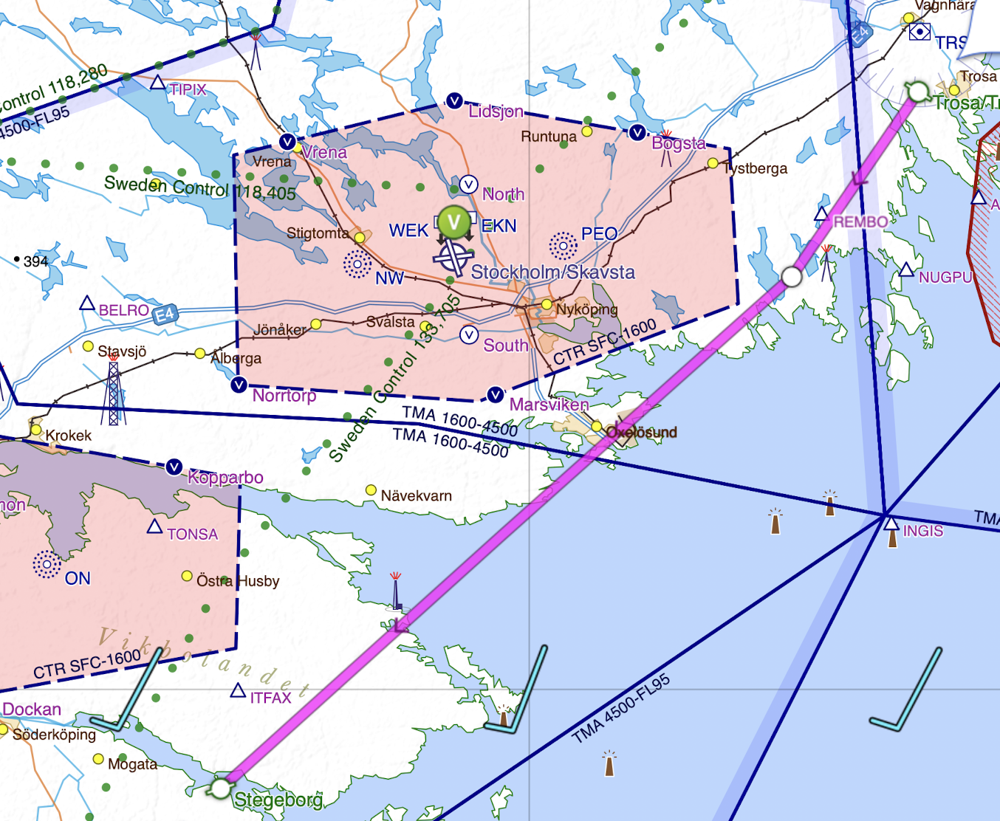
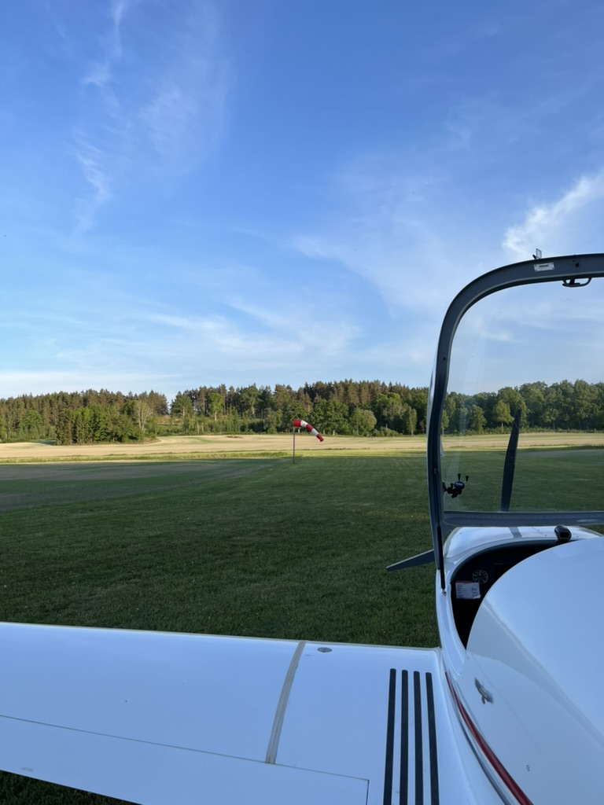
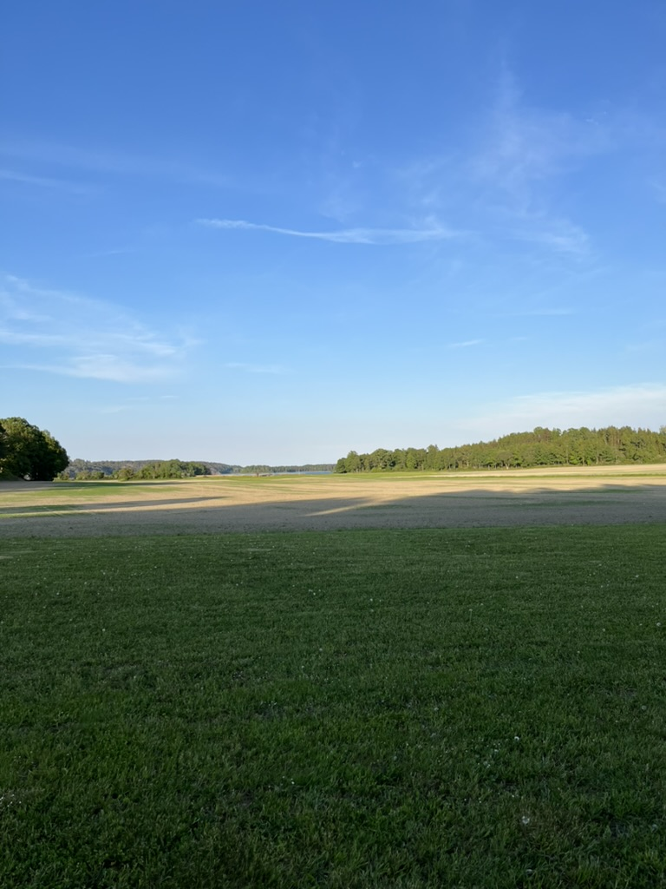
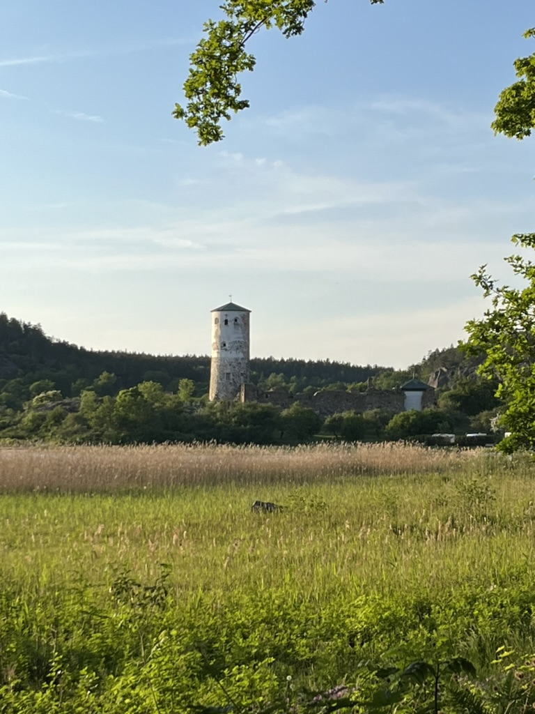
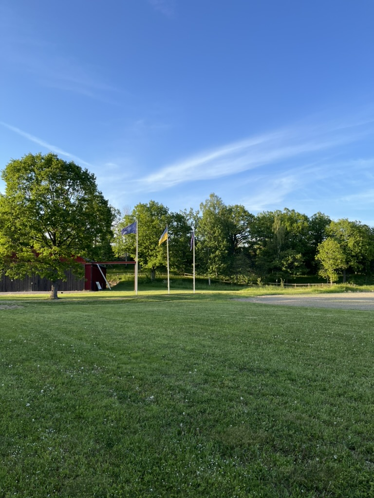
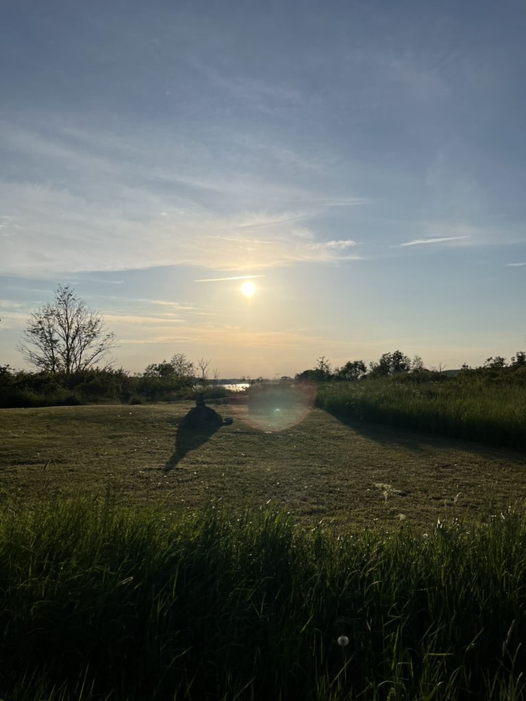

The route to Stegeborg from Trosa was planned as a straight line with minor correction to avoid the Skavsta CTR in case it would take time to get clearance to C airspace. My plan was to fly at ca 3000ft and then descend once I was close to Stegeborg. The entire route to Stegeborg and back was on a flight plan.

The starting airfield is Trosa/Troslanda and the destination is Stegeborg (ESVE), with the following route used as the flight plan:
DCT 5846N01720E DCT DEP 5854N01730E Destination ZZZZ 5826N01636
Journey to Stegeborg (ESVE)
The route to Stegeborg was very smooth. I got delayed due to other aircrafts taking off as well as the fact that the flight plan required me to enter the coordinates to Stegeborg; it was not enough to just write ESVE. After take off and right turn towards Stegeborg, I activated the flight plan and requested clearance to controled airspace at 3000ft. Östgöta Approach gave me the clearance to 3000ft and below, and emphasised that I can fly on lower altitudes up to 3000ft. The view below was amazing and you could see the archipelago with all the small islands.
The journey took around 30 min, and during this time I kept monitoring the instruments and mentally preparing for landing. I was also learning how to use the built in GPS for future routes. However, at this point I felt more comfortable using the paper map since this is what Björn and I practised so much during flight training. I feel that the GPS can be a good secondary source, however, it's important to know where you are on the paper map as the primary means of navigating.
Once close to Stegeborg, Östgöta Approach made me descend to below 1600ft and I was allowed to leave the frequency to the one used by Stegeborg Radio. I knew that there were no aircrafts in the vicinity of the airfield and I kept sending my intentions. After checking the wind direction, I attempted the landing several times but were too high on final. Although I could have attempted a sideslip, I felt that since it was a late evening, it's better to just overfly the field and attempt the landing again. After several attempts I landed on runway 07.
  
After closing the flight plan and submitting a new one, I parked the plane and tried to find the castle ruins, since I still had some time left.
Journey back to Trosa/Troslanda
The journey back was on a flight plan as well and I requested 3000ft at first with a descent to 2000ft closer to Trosa, to avoid Stockholm TMA. Similar to the journey to Stegeborg, the air was calm and in Trosa it was windstill.
 
Journey performed on 30th of May 2024. Last updated 8th of June 2024.